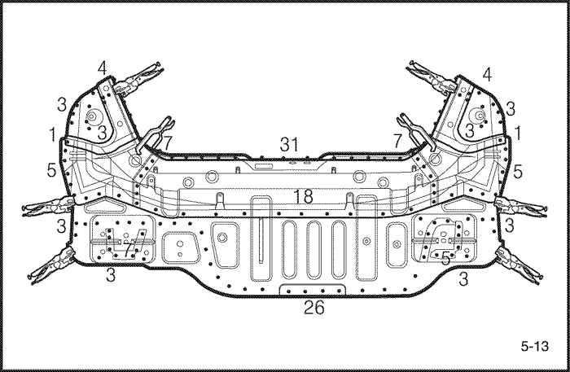

- Снять соответствующие части.
- Части, которые снимаются при снятии задней панели.
- Задний ремень безопасности и заднее сиденье.
- Глушитель, топливный бак и связанные с ним части.
- Части шасси.
- Другие соответствующие детали.
Внимание! Не курить при работе вблизи топливной системы. Беречь топливную систему от открытого огня. При необходимости снять топливный бак и отходящие трубопроводы.
- Начерно выпрямить и выправить поврежденное место.
- Осмотреть повреждения и начерно вытянуть и выправить с помощью правильного стенда соответствующую панель задка, боковую панель, внутреннюю часть колесной арки, задний лонжерон и другие поврежденные части, прежде чем снимать панель продолжения заднего пола, панель заднего пола и панель задка.
- Прикрепить автомобиль к правильному стенду с помощью нижних захватов, расположенных в обозначенных точках установки домкратов в нижней части внутренней панели боковины.
Примечание: Измерить размеры и сравнить с контрольными размерами на схеме ремонта кузова.
- Отрезать и отделить панель задка.
- Для снятия панели задка ее надо отрезать и отделить.
- Отрезать и отделить панель заднего пола и панель продолжения заднего пола.
- Отрезать панель заднего пола и панель продолжения заднего пола с помощью газовой горелки или пневматического зубила по показанной на рисунке жирной линии, оставив на месте сварочные кромки заднего лонжерона.
Примечание: Отрезать задний пол в 15 мм (0.59 in.) от сварочной кромки поперечины заднего сиденья.
- Накернить точки вокруг точек сварки на заднем лонжероне, продолжении заднего лонжерона и накладке.
- Специальным инструментом высверлить сварные точки по накерненным местам.


Примечание: Высверливая отверстия, соблюдать осторожность, чтобы не просверлить сам задний лонжерон, продолжение заднего лонжерона или накладку.
- Отрезать и отделить оставшуюся часть панели заднего пола и панель продолжения заднего пола пневматическим зубилом, оставив на месте сварочные кромки.
- Выровнять и зашлифовать неровности от оторванных сварных точек дисковой шлифовальной машиной и заварить все трещины, отверстия и другие дефекты. Если необходимо, также отремонтировать задний лонжерон и продолжение заднего лонжерона.
Внимание! Во избежание травм глаз надевать защитные очки при шлифовке, резке или полировке.

- Снять грунтовочное покрытие и герметизирующую ленту.
- Нагреть грунтовочное покрытие и герметизирующую ленту в местах сварки с помощью газовой горелки и отделить грунтовочное покрытие и ленту стальным шпателем.
- Отрихтовать поврежденные смежные части.
- С помощью молотка и оправки отрихтовать поврежденные участки заднего лонжерона и продолжения заднего лонжерона.
- Выровнять сварочные кромки с помощью молотка и оправки.
- Заварить высверленные отверстия.
Внимание! Во избежание травм глаз и ожогов пользуйтесь при сварке каской, рукавицами и защитной обувью установленного образца.
- Выровнять и зашлифовать неровности от оторванных сварных точек дисковой шлифовальной машиной.
- Перед сваркой удалить краску и грунтовочное покрытие с обеих сторон свариваемой кромки.
- Отрезать новый задний пол по месту и установить новый задний пол и продолжение заднего пола.
- Отрезать новую часть так, чтобы она перекрывала поперечину заднего сиденья примерно на 40 мм (1.57 in.).

- Дисковой шлифовальной машиной зачистить от краски до стального листа обе стороны привариваемых участков заднего пола и продолжения заднего пола.
Внимание! Во избежание травм глаз надевать защитные очки при шлифовке, резке или полировке.
- Установить и зафиксировать новую панель зажимными устройствами.
Примечание: Для правильной установки рекомендуется использовать направляющие шаблоны; проверить параллельность задних лонжеронов.
- Временно прихватить зажатую секцию сваркой.
Внимание! Во избежание травм глаз и ожогов пользуйтесь при сварке каской, рукавицами и защитной обувью установленного образца.
- Снять зажимные устройства и временно установить заднюю панель; затем проверить совмещение, различия уровней и внешний вид.
- Выполнить основную сварку.
- Приваривание заднего пола и поперечины заднего сиденья производится сваркой МИГ угловым швом, как показано на рисунке.

- Задний пол и продолжение заднего пола привариваются к кромкам заднего лонжерона и накладке точечной сваркой, как показано на рисунке.
Внимание! Во избежание травм глаз и ожогов пользуйтесь при сварке каской, рукавицами и защитной обувью установленного образца.
- Сначала выполнить пробную сварку и проверить качество сварки.
- Увеличить количество точек на 20% для свариваемых областей.
- Приваривание панели задка
- Панель задка приваривается при необходимости замены старой панели.
- Отшлифовать место сварки.
- Выровнять места сварки МИГ дисковой шлифовальной машиной, затем аккуратно, чтобы не деформировать, выровнять выступающие места молотком.
Внимание! Во избежание травм глаз надевать защитные очки при шлифовке, резке или полировке.

- С помощью молотка и оправки выровнять приваренные точечной сваркой кромки так, чтобы они плотно прилегали одна к другой.
- Наложить герметизирующую ленту.
- Наложить герметизирующую ленту на стык панели заднего пола и панели продолжения заднего пола, сваренные поверхности соответствующей панели и все герметизируемые зазоры.
- Нанести грунтовочное покрытие.
- Нанести грунтовочное покрытие на заднюю колесную арку и обозначенную часть заднего пола.
- Нанести краску.
- ПРЕДОСТОРОЖНОСТЬ
- При нанесении лакокрасочных покрытий обеспечить вентиляцию. Большинство лакокрасочных материалов содержат вредные при вдыхании или проглатывании вещества. Прежде чем открывать емкость с лакокрасочным материалом, прочесть этикетку.
- Избегать контакта с кожей. При окраске использовать респиратор установленного образца, перчатки, средства защиты глаз и соответствующую одежду.
- Лакокрасочные материалы огнеопасны. Хранить их в безопасном месте, беречь от искр и огня, не курить.
- Наложить шумоизоляцию.
- Очистить пассажирский салон и багажник.
- Наложить шумоизоляцию на поверхность заднего пола и продолжения заднего пола.

- Установить соответствующие детали.
- Установка производится в порядке, обратном снятию.
- Проверка и регулировка
- Проверить зазоры и различия уровней.
- Проверить открывание и закрывание замка багажника.
- Проверить работу всех систем.
- Осмотреть багажник на предмет протечек.
Примечание: Для проверки работы систем использовать указанную контрольную таблицу.